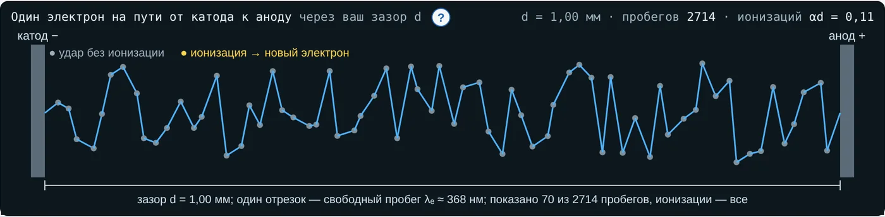
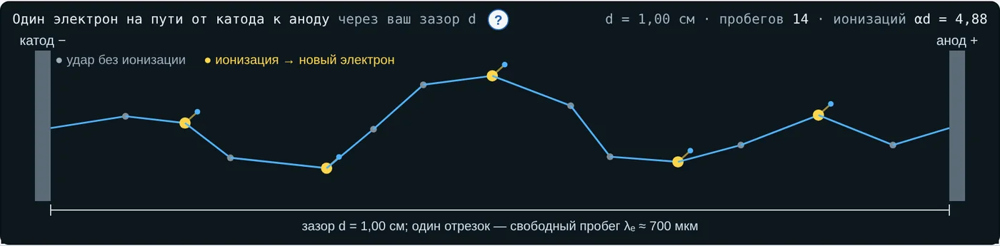
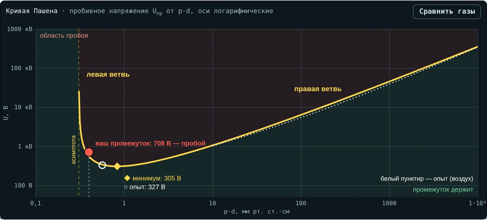
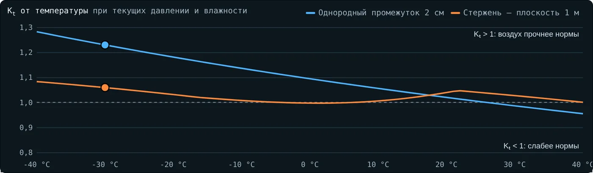
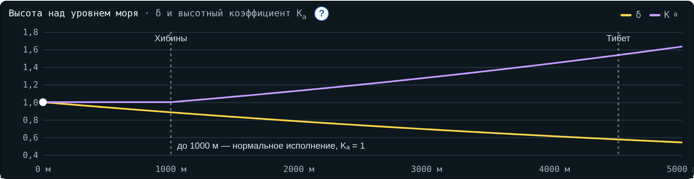
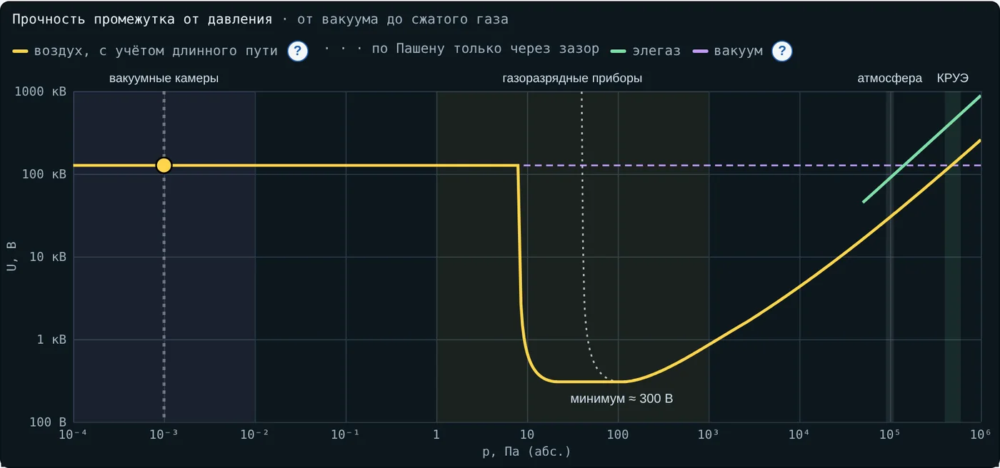
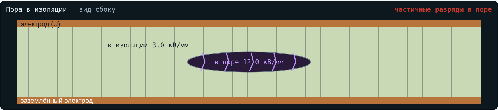
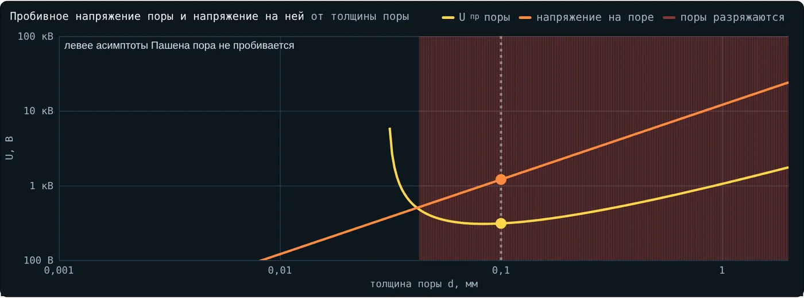

Техника высоких напряжений
Конспект лекции
Лекция 4. Закон Пашена, давление и плотность газа
Почему прочность газа зависит от p·d, погоды и высоты · материал для студентов
О чём лекция. В лекции 2 условие самостоятельности разряда γ(eαd − 1) = 1 привело к лавине и пробою, в лекции 3 — к стримеру и лидеру. Теперь посмотрим, как пробивное напряжение газа зависит от давления и расстояния: от вакуума до сжатого элегаза, от тибетского высокогорья до морозного Кольского антициклона. Интерактив. «Закон Пашена» на сайте курса: вкладки 1–4 повторяют разделы конспекта, вкладка 5 — реальные случаи, 6 — задачи, 7 — тест (5 вариантов). Задачи с разбором — в пособии студента к лекции 4. |
После лекции вы сможете:
вывести формулу Пашена из условия самостоятельности разряда и рассчитать по ней пробивное напряжение;
объяснить физику правой и левой ветвей кривой и найти минимум Пашена;
применить закон подобия и объяснить, почему в разреженном газе разряд идёт по длинному пути;
рассчитать относительную плотность воздуха и атмосферную поправку Kt при испытаниях;
учесть высоту установки оборудования;
объяснить, почему опасны потеря вакуума в камере выключателя и утечка элегаза из КРУЭ;
найти, при каком поле начнёт разряжаться газовая пора в изоляции.
1. Обозначения и сокращения
| Обозначение | Смысл | Единица |
|---|---|---|
| Uпр | пробивное напряжение промежутка | В, кВ |
| p | давление газа | мм рт. ст., Па, МПа |
| d | расстояние между электродами (толщина поры) | см, мм |
| p·d | произведение давления на расстояние | мм рт. ст.·см (1 мм рт. ст.·см = 1,333 Па·м) |
| A, B | постоянные ударной ионизации газа | 1/(см·мм рт. ст.), В/(см·мм рт. ст.) |
| γ | коэффициент вторичной эмиссии катода | — |
| α | коэффициент ударной ионизации | 1/см |
| λ, λe | длина свободного пробега молекулы и электрона | м, мкм |
| δ | относительная плотность воздуха | — |
| h | абсолютная влажность воздуха | г/м³ |
| Kt | атмосферный поправочный коэффициент (k1·k2) | — |
| Ka | высотный коэффициент | — |
| H | высота над уровнем моря | м |
| εr | относительная диэлектрическая проницаемость изоляции | — |
| Сокращение | Расшифровка |
|---|---|
| КРУЭ | комплектное распределительное устройство с элегазовой изоляцией |
| SF6 | элегаз, гексафторид серы |
| ЧР | частичный разряд |
| МЭК | Международная электротехническая комиссия (IEC) |
| СПЭ | сшитый полиэтилен |
| RIP | изоляция из бумаги, пропитанной смолой (resin impregnated paper) |
2. Закон Пашена
2.1. Опыт и закон
В 1889 г. Фридрих Пашен измерял пробивное напряжение газа между плоскими электродами, меняя давление и расстояние. Оказалось, что для данного газа и материала электродов напряжение зависит не от p и d по отдельности, а только от их произведения. Это закон Пашена:
(1)
Произведение pd показывает, сколько молекул стоит у электрона на пути через зазор. Позже Таунсенд вывел закон из теории электронной лавины, которую мы разбирали в лекции 2.
2.2. Вывод из условия самостоятельности разряда
Разряд становится самостоятельным, когда каждый электрон, ушедший с катода, за счёт лавины и вторичной эмиссии возвращает на катод хотя бы одного нового:
(2)
Коэффициент ударной ионизации в однородном поле E = U/d описывают формулой
(3)
Подставим её в условие самостоятельности, учитывая E = U/d:
(4)
Прологарифмируем: ln(A·pd) − B·pd/U = ln ln(1 + 1/γ). Отсюда формула Пашена:
(5)
В учебнике Важова и Лавриновича (формулы 1.20–1.25) расстояние обозначено S, давление P, а B = A·Uи, где Uи — потенциал ионизации газа. Для воздуха примем справочные A = 15 1/(см·мм рт. ст.), B = 365 В/(см·мм рт. ст.) (Райзер) и γ = 0,01; тогда ln ln(1 + 1/γ) = ln 4,615 = 1,529. Постоянные других газов — в таблице 1.
| Газ | A | B | γ (модель) | Минимум по формуле | Минимум, измерения |
|---|---|---|---|---|---|
| Воздух | 15 | 365 | 0,01 | 305 В при 0,84 | 327 В при 0,57 |
| Азот | 12 | 342 | 0,041 | 251 В при 0,73 | 251 В при 0,67 |
| Аргон | 12 | 180 | 0,036 | 137 В при 0,76 | 137 В при 0,90 |
| Гелий | 3 | 34 | 0,0064 | 156 В при 4,58 | 156 В при 4,00 |
| Водород | 5 | 130 | 0,021 | 273 В при 2,10 | 273 В при 1,15 |
| Углекислый газ | 20 | 466 | 0,0013 | 421 В при 0,90 | 420 В при 0,51 |
Таблица 1. Постоянные Таунсенда (Райзер) и минимумы Пашена (Naidu, Kamaraju), pd — в мм рт. ст.·см. Для воздуха γ = 0,01 — типичное значение для металлического катода; для других газов γ в модели подобран так, чтобы минимум по напряжению совпал с измеренным.
. Над жёлтой линией — пробой, под ней — промежуток держит; ромб — минимум по формуле, белое кольцо — по измерениям, белый пунктир — пробой воздуха по измерениям, кружок — зазор 1 мм при 3 кВ")
Рис. 1. Кривая Пашена воздуха (интерактив, вкладка 1). Над жёлтой линией — пробой, под ней — промежуток держит; ромб — минимум по формуле, белое кольцо — по измерениям, белый пунктир — пробой воздуха по измерениям, кружок — зазор 1 мм при 3 кВ
Пример. Зазор 1 мм в воздухе при 760 мм рт. ст.: pd = 76, Uпр = 365·76/(ln 1140 − 1,529) = 27 740/5,51 = 5,03 кВ. Измерения дают ≈ 4,3 кВ: постоянные A и B подходят лишь в ограниченном диапазоне E/p, поэтому формула — оценка с точностью 10–20 %. В учебнике отмечено ещё два отличия опыта от расчёта: при очень малых pd пробой приближается к вакуумному и определяется процессами на поверхности электродов, а при очень больших pd сказывается неоднородность поля (сегодня это объясняют и переходом к стримерному механизму). Минимум для воздуха — около 300 В, прочность при атмосферном давлении — около 30 кВ/см.
3. Две ветви кривой и минимум
3.1. Пробег электрона
Электрон между столкновениями пролетает в среднем длину свободного пробега λe. Для молекул воздуха λ ≈ 6,6 мм при 1 Па и обратно пропорциональна давлению; у электрона пробег примерно в 4√2 ≈ 5,7 раза больше. При атмосферном давлении λe ≈ 0,37 мкм.
На одном пробеге в поле E электрон набирает энергию
(6)
Чтобы ионизировать молекулу азота, нужно ≈ 15,6 эВ, кислорода — ≈ 12,1 эВ. На пути через зазор электрон делает d/λe ∝ pd столкновений. Пробой определяют оба числа: сколько энергии на пробеге и сколько пробегов.
3.2. Правая ветвь
При большом pd газ плотный: пробегов много, но каждый короткий. В зазоре 1 мм при атмосферном давлении — около 2700 пробегов по ≈ 1 эВ при 3 кВ. Чтобы электрон набирал энергию для ионизации, нужно большее поле — и напряжение растёт с pd почти линейно.

Рис. 2. Правая ветвь: зазор 1 мм при 760 мм рт. ст. и 3 кВ — тысячи пробегов, ионизаций αd ≈ 0,1 (интерактив, вкладка 1; показано 70 пробегов)
3.3. Левая ветвь
При малом pd газ разрежен: электрон пролетает зазор, сделав лишь несколько столкновений. Энергии на пробеге много, но ионизаций мало, а для самостоятельного разряда их нужно ln(1 + 1/γ) ≈ 4,6 на пути. Уменьшаем давление — пробивное напряжение растёт. По формуле оно уходит в бесконечность при
(7)
Для воздуха (pd)* = 4,615/15 = 0,31 мм рт. ст.·см: при меньшем pd знаменатель формулы Пашена становится отрицательным.

Рис. 3. Левая ветвь: зазор 1 см при 0,4 мм рт. ст. и 700 В — 14 пробегов, из них ≈ 5 ионизирующих (жёлтые точки)
3.4. Минимум Пашена
Между ветвями есть наименьшее пробивное напряжение. Приравняв к нулю производную формулы Пашена по pd, получим
(8)
Для воздуха по формуле Umin = 305 В при pd = 0,84 мм рт. ст.·см; по измерениям — 327 В при 0,57. При атмосферном давлении это зазор около 7–11 мкм.
| Главное следствие. Ниже минимума Пашена (для воздуха ≈ 330 В) чистый газовый промежуток не пробивается ни при каком давлении и зазоре. Поэтому амплитуда сетевого напряжения 230 В (325 В) не пробивает воздушный зазор, а искра при размыкании контактов — дуга в парах металла, начавшаяся из замкнутого состояния, а не пробой по Пашену. |
4. Закон подобия, длинный путь и границы формулы
4.1. Закон подобия
Увеличим давление в k раз и уменьшим зазор в k раз. Число пробегов на пути (∝ pd) не изменится, энергия на пробеге (∝ E/p = U/(pd)) при том же U тоже. Значит, пробивное напряжение то же. Закон подобия позволяет испытывать уменьшенные модели газовой изоляции при повышенном давлении и переносить результаты на натуру.
4.2. Длинный путь на левой ветви
На левой ветви длинный промежуток пробивается легче короткого: больше столкновений — pd ближе к минимуму. В воздухе при 0,4 мм рт. ст. зазор 1 см пробивается при 556 В, а 2 см — при ≈ 306 В. Поэтому в разреженном газе разряд идёт в обход: по стенке камеры, между выводами, между дальними частями электродов. Конструкторы вакуумных и газоразрядных приборов закрывают такие пути экранами и изоляционными вставками.

Рис. 4. Парадокс левой ветви: точка при pd = 0,4 мм рт. ст.·см (интерактив, вкладка 1, кнопка «Парадокс левой ветви»)
4.3. Где формула работает плохо
Правая ветвь, большие pd. Для однородного поля в воздухе при pd больше ≈ 10 мм рт. ст.·см используют формулу, построенную по измерениям (Kuffel, Zaengl):
(9)
Здесь Uпр в киловольтах, d — в сантиметрах.
Она даёт 30,3 кВ для зазора 1 см — известные «30 кВ/см». Сжатый газ. Выше ≈ 0,5 МПа на пробой влияют эмиссия с микроострий электродов и пылинки, прочность ниже расчётной по Пашену. Глубокий вакуум. Газ в разряде не участвует, прочность задают электроды (раздел 6).
5. Плотность воздуха и атмосферные поправки
5.1. Относительная плотность δ
В воздухе при обычных условиях пробивное напряжение определяется не давлением, а плотностью газа. Её выражают относительно нормальных условий (760 мм рт. ст., 20 °C):
(10)
| Погода | p, мм рт. ст. | t, °C | δ |
|---|---|---|---|
| Нормальные условия | 760 | 20 | 1,00 |
| Апатиты, мороз и антициклон | 775 | −30 | 1,23 |
| Оттепель, циклон | 735 | +1 | 1,03 |
| Лето, жара | 750 | +28 | 0,96 |
Пробивное напряжение воздушных промежутков примерно пропорционально δ: в морозный антициклон воздушная изоляция на 20–25 % прочнее, в жару — на несколько процентов слабее.
5.2. Поправки по ГОСТ 1516.2 и МЭК 60060-1
Испытательные напряжения в нормах заданы для нормальных условий: 101,3 кПа, 20 °C, абсолютная влажность 11 г/м³. В день испытания вводят атмосферный поправочный коэффициент
(11)
Коэффициент k учитывает влажность; для переменного напряжения k = 1 + 0,012(h/δ − 11) при 1 ≤ h/δ ≤ 15. Показатели m и w зависят от типа разряда через параметр
(12)
Здесь U50 — 50-процентное разрядное напряжение в киловольтах (амплитуда), L — длина разрядного пути в метрах.
| g | m | w |
|---|---|---|
| < 0,2 | 0 | 0 |
| 0,2…1,0 | g(g − 0,2)/0,8 | g(g − 0,2)/0,8 |
| 1,0…1,2 | 1 | 1 |
| 1,2…2,0 | 1 | (2,2 − g)(2,0 − g)/0,8 |
| > 2,0 | 1 | 0 |
Короткий однородный промежуток (g > 2): Kt = δ, влажность не влияет — пробой идёт без длинных стримеров. Длинный промежуток стержень — плоскость (g ≈ 1): важны и плотность, и влажность. Применение: в день испытания подают U = U0·Kt; измеренное разрядное напряжение приводят к нормальным условиям делением U0 = U/Kt.
Рис. 5. Поправки в морозный антициклон: −30 °C, 775 мм рт. ст., 80 % (интерактив, вкладка 2)

Рис. 6. Kt двух промежутков в зависимости от температуры (интерактив, вкладка 2)
Пример. Норма — 95 кВ, в день испытания 735 мм рт. ст. и +25 °C, промежутки короткие: δ = 0,951, подают 95·0,951 = 90,3 кВ. Подав 95 кВ, мы испытали бы изоляцию жёстче нормы.
Морозный воздух очень сухой: при −30 °C абсолютная влажность — доли грамма на кубометр, h/δ < 1 — вне диапазона формулы. Такие испытания на Кольском полуострове лучше проводить в помещении или учитывать погрешность поправки.
6. Высота над уровнем моря
Давление падает с высотой примерно как
(13)
Здесь p в мм рт. ст., H — высота в метрах; 8150 м — характерная высота атмосферы, на которой давление падает в e раз.
На 1000 м δ ≈ 0,88, на 4500 м — 0,58. Оборудование нормального исполнения рассчитано на высоту до 1000 м; выше требуемый уровень изоляции при нормальных условиях увеличивают высотным коэффициентом (МЭК 60071-2)
(14)
Для воздушных промежутков при грозовом импульсе и переменном напряжении m = 1.
Пример. Уровень 75 кВ для высоты 2500 м: Ka = e1500/8150 = 1,20, нужен уровень 90 кВ.

Рис. 7. δ и высотный коэффициент Ka (интерактив, вкладка 2)
Самый известный пример — линия постоянного тока Гэрмо — Лхаса (Тибет, 2011): 88 % трассы выше 4000 м. Её проектировали на ±500 кВ, но построили на ±400 кВ — в том числе из-за ограничений внешней изоляции на высоте; композитные изоляторы удлинили до 12–14 м. В Хибинах на 400–1000 м прочность воздуха ниже на 5–12 %, но мороз отчасти это компенсирует.
7. От вакуума до сжатого газа
Если менять давление при неизменном зазоре, пробивное напряжение проходит всю кривую Пашена: глубокий вакуум — левая ветвь — минимум — правая ветвь — сжатый газ (рис. ниже).

Рис. 8. Прочность зазора 10 мм от давления: исправная вакуумная камера (интерактив, вкладка 3)
7.1. Вакуум
При давлении ниже ≈ 10−2 Па пробег электрона — метры и километры, в зазоре нет молекул для лавины. Пробой определяют электроды: автоэлектронная эмиссия с микроострий, испарение металла, микрочастицы. Для оценки принимают U ≈ K·√d; в модели интерактива K = 40 кВ/√мм, то есть ≈ 130 кВ на 10 мм. Так работают вакуумные камеры выключателей 6–35 кВ.
Если камера теряет вакуум, давление растёт к области 1–100 Па. Внутри камеры есть пути длиной в сантиметры, и разряд находит путь с pd около минимума: прочность падает до сотен вольт. Поэтому вакуумную камеру в эксплуатации проверяют высоким напряжением на разомкнутых контактах.
Рис. 9. Камера потеряла вакуум, давление 50 Па: точка у минимума Пашена (интерактив, вкладка 3)
7.2. Элегаз
Элегаз SF6 — электроотрицательный газ: его молекулы захватывают электроны, лавине труднее развиться. При одинаковом давлении он примерно в 3 раза прочнее воздуха: при 0,1 МПа ≈ 89 кВ/см против ≈ 30 кВ/см. Для однородного поля применяют оценку
(15)
Здесь E в кВ/мм, p — абсолютное давление в барах (1 бар = 0,1 МПа). При 1 бар E = 8,91 кВ/мм.
В КРУЭ элегаз держат под давлением 0,4–0,6 МПа (абс.), и изоляционные расстояния рассчитаны на это давление. Прочность почти пропорциональна давлению: утечка с 0,5 до 0,35 МПа снижает её на 30 %. Поэтому каждый отсек снабжают датчиком плотности с двумя ступенями: сигнал о снижении и блокировка оперирования.
: зелёная кривая — элегаз, жёлтая — воздух")
Рис. 10. Утечка элегаза до 0,35 МПа (интерактив, вкладка 3): зелёная кривая — элегаз, жёлтая — воздух
8. Газ внутри твёрдой изоляции
Поры, расслоения и трещины в твёрдой изоляции заполнены газом, и к ним применим закон Пашена. На границе пора — изоляция непрерывна нормальная составляющая электрической индукции, поэтому поле в плоской поре поперёк поля
(16)
Для сферической поры усиление меньше:
(17)
Пора разряжается, когда напряжение на ней Eв·d достигает пробивного напряжения газа по Пашену при pd поры. Это и есть частичный разряд — тема лекции 10.
Пример. Плоская пора 0,1 мм в эпоксидной изоляции (εr = 4) при 760 мм рт. ст.: pd = 7,6, Uпр = 865 В, пробивное поле поры 8,65 кВ/мм. Разряды начнутся при поле в изоляции 8,65/4 = 2,16 кВ/мм — это в пределах рабочих полей литой изоляции, поэтому поры такого размера недопустимы.

Рис. 11. Пора в эпоксидной изоляции при 3 кВ/мм: поле в поре 12 кВ/мм, разряды есть (интерактив, вкладка 4)

Рис. 12. Пробивное напряжение поры и напряжение на ней от толщины поры: красная область — поры, которые разряжаются
Мелкие поры прочнее по напряжённости: пробивное поле поры 0,02 мм ≈ 17 кВ/мм, поры 1 мм ≈ 5 кВ/мм. Но с ростом толщины поры напряжение на ней растёт быстрее её прочности, поэтому норма приёмки задаёт наибольший допустимый размер поры. Если газ в поре разрежён (например, остался после вакуумной заливки), pd меньше и пора ближе к минимуму Пашена — она слабее. Такой расчёт встречается и в расчётных заданиях — например, при выборе допустимого размера поры в кабеле или во вводе.

Рис. 13. То же при давлении в поре 100 мм рт. ст.: разряжаются и более мелкие поры
9. Реальные случаи
Случаи 1–5 описаны в открытых источниках, случай 6 разбирает известный факт. Все они есть во вкладке 5 интерактива с вопросами.
9.1. Ракета Electron, 19 сентября 2023
| Что случилось | Примерно на 151-й секунде полёта упало напряжение источника питания второй ступени, ракета не вышла на орбиту. Наиболее вероятная причина по расследованию — дуга в высоковольтной системе питания, закоротившая аккумуляторы. Совпали: скопление гелия и азота в межступенчатом отсеке, дефект изоляции жгута, неблагоприятная форма напряжения. |
| Физика | При подъёме давление в отсеке упало, pd зазоров дошло до минимума Пашена — прочность снизилась до сотен вольт. Гелий ещё ослабляет промежуток. |
| Урок | Высоковольтные цепи в негерметичных отсеках проектируют с учётом прохождения минимума Пашена; Rocket Lab изменила конструкцию отсека, чтобы сохранять в нём давление. |
| Источник | The Register, 09.11.2023 (по отчёту Rocket Lab). |
9.2. Линия ±400 кВ Гэрмо — Лхаса, 2011
| Что случилось | 88 % трассы выше 4000 м, перевал Тангула — 5300 м. Проект ±500 кВ снизили до ±400 кВ, в том числе из-за ограничений внешней изоляции на высоте. Изоляторы удлинили до 12–14 м, удельную длину пути утечки увеличили в 1,28 раза. |
| Физика | δ ≈ e−4500/8150 ≈ 0,58: разрядные напряжения воздушных промежутков на 40 % ниже, чем у моря. |
| Урок | Выше 1000 м уровень изоляции увеличивают в Ka = e(H−1000)/8150 раз. |
| Источник | INMR, «15th Anniversary of World’s Highest HVDC Line». |
9.3. Перекрытие в отсеке КРУЭ 400 кВ, CIGRE 2026
| Что случилось | Инженеры POWERGRID (Индия) представили разбор перекрытия в отсеке КРУЭ 400 кВ из-за незамеченного снижения давления элегаза и стратегию восстановления. |
| Физика | Прочность элегаза на правой ветви почти пропорциональна давлению; потеря части газа снимает изоляционный запас. |
| Урок | Датчики плотности с сигналом и блокировкой, контроль трендов давления. |
| Источник | CIGRE Session 2026, доклад A3-10328. |
9.4. Проверка вакуумной камеры выключателя
| Что случилось | В эксплуатации вакуумные камеры проверяют высоким напряжением между разомкнутыми контактами — 75–80 % заводского испытательного; отказ при обеих полярностях — камера негодна, при одной — возможна эмиссия с микроострия. |
| Физика | При потере вакуума давление поднимается к минимуму Пашена, и в камере находится путь с оптимальным pd: прочность падает до сотен вольт. |
| Урок | Испытание показывает, на какой ветви кривой Пашена находится камера. |
| Источник | Megger, Electrical Tester, март 2020. |
9.5. Частичные разряды в авиационной проводке
| Что случилось | Лаборатория Lectromec: напряжения возникновения и погасания ЧР в проводах и кабелях на высоте ниже, чем у земли, — «до определённого предела». |
| Физика | Разреженный воздух в порах и зазорах изоляции: pd уменьшается к минимуму Пашена; дальше — левая ветвь, и напряжение снова растёт. |
| Урок | Проводку для высоты испытывают при пониженном давлении. |
| Источник | Lectromec, «Partial Discharge at Altitude». |
9.6. Может ли 230 В пробить воздух?
| Что случилось | Амплитуда 230 В — 325 В, минимум Пашена воздуха — 327 В. Однако искра при размыкании контактов под нагрузкой видна всегда. |
| Физика | Газовый промежуток ниже минимума не пробивается. Дуга размыкания начинается из замкнутого состояния: ток идёт через последнюю точку контакта, металл плавится и испаряется. |
| Урок | Закон Пашена описывает пробой изолирующего промежутка, но не дугу размыкания. |
| Источник | Naidu, Kamaraju «High Voltage Engineering»; «Paschen's law», Википедия. |
10. Главное
Пробивное напряжение однородного промежутка в газе зависит только от p·d (закон Пашена).
Справа от минимума газ плотный — мало энергии на пробеге; слева разрежен — мало столкновений.
Минимум Пашена воздуха ≈ 327 В: ниже него чистый газовый промежуток не пробить.
На левой ветви длинный путь пробивается легче короткого.
Прочность воздуха пропорциональна δ; при испытаниях вводят Kt = δm·kw.
Выше 1000 м уровень изоляции увеличивают в Ka = e(H−1000)/8150 раз.
Элегаз в КРУЭ работает на правой ветви: прочность пропорциональна давлению; вакуумная камера — левее всей кривой, и потеря вакуума опасна.
Газовая пора в изоляции разряжается раньше, чем пробивается изоляция: поле в ней в εr раз больше.
11. Вопросы для самопроверки
От чего зависит пробивное напряжение по закону Пашена и почему?
Почему на правой ветви напряжение растёт с pd, а на левой — при уменьшении pd?
Чему равен минимум Пашена для воздуха и какое из этого следует практическое правило?
Как изменится пробивное напряжение, если давление увеличить в 4 раза, а зазор уменьшить в 4 раза?
Почему в разреженном газе разряд идёт не по кратчайшему пути?
Как рассчитать δ и как применить Kt при испытании?
Почему влажность важна для длинных промежутков и не важна для коротких однородных?
Почему оборудование для высокогорья выбирают с повышенным уровнем изоляции?
Почему утечка элегаза из КРУЭ опасна, даже если газ ещё остался?
Почему камера, потерявшая вакуум, держит меньше, чем камера, полная воздуха?
При каком поле в изоляции начнёт разряжаться пора 0,1 мм в эпоксиде?
12. Источники
Важов В. Ф., Лавринович В. А. Техника высоких напряжений: учебник. — Томск: ТПУ, 2014. — Разд. 1.
Райзер Ю. П. Физика газового разряда. — М.: Наука.
Kuffel E., Zaengl W. S., Kuffel J. High Voltage Engineering: Fundamentals. — Newnes, 2000.
Naidu M. S., Kamaraju V. High Voltage Engineering. — McGraw-Hill.
ГОСТ 1516.2-97. Электрооборудование и электроустановки переменного тока на напряжение 3 кВ и выше. Общие методы испытаний электрической прочности изоляции.
IEC 60060-1:2010. High-voltage test techniques — Part 1: General definitions and test requirements.
IEC 60071-2. Insulation co-ordination — Part 2: Application guidelines.
Paschen's law. Wikipedia: https://en.wikipedia.org/wiki/Paschen%27s_law
The Register, 09.11.2023: https://www.theregister.com/2023/11/09/rocket_lab_investigation
INMR. 15th Anniversary of World’s Highest HVDC Line: https://www.inmr.com/10th-anniversary-of-worlds-highest-hvdc-line/
CIGRE Session 2026, A3-10328: https://www.e-cigre.org/publications/detail/a3-10328-2026-case-study-on-flashover-in-a-400-kv-gis-compartment-due-to-undetected-sf6-pressure-drop-and-restoration-strategy.html
Megger. DC testing of vacuum integrity in MV switchgear, 2020: https://www.megger.com/en/et-online/march-2020/dc-testing-of-vacuum-integrity-in-mv-switchgear
Lectromec. Partial Discharge at Altitude: https://www.lectromec.com/blog/partial-discharge-at-altitude/
LBL. High-pressure gas breakdown (SF₆ и воздух): https://www-eng.lbl.gov/~shuman/NEXT/MATERIALS&COMPONENTS/HV/hp_gas_breakdown.pdf